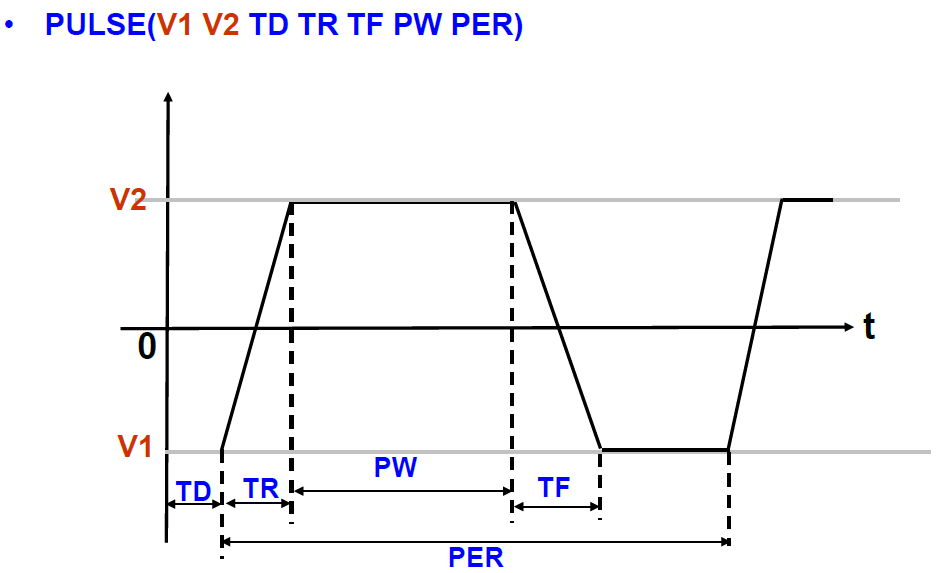

pySpice package¶
Submodules¶
pySpice.element_class module¶
These classes works more like C Structure. It stores the information of the circuit element or SPICE commands into its different fields.
-
class
pySpice.element_class.analysis_dc(swp_src, generator)[source]¶ Member: - swp_src: the value of the sweep points are put into a generator
-
class
pySpice.element_class.ele_2port(catagory, name, loc_p, loc_n, value)[source]¶ Base class for most dual-port circuit elements
Member: - catagory: describing what kind of device this instance belong to
- loc_p: Positive port in internal representation(an integer)
- branch_flag: whether this element need a variable to represent the current throught it.
-
class
pySpice.element_class.inductor(branch_num, *av)[source]¶ Bases:
pySpice.element_class.ele_2portMember: - branch: the internal variable represent the current throught it
-
class
pySpice.element_class.print_item(cmd)[source]¶ The PRINT/PLOT commands are parsed to the instance of this class
Member: - cmd: the original string describing the plot/print
- ac_flag: whether it’s an AC plot, because the print/plot command to AC need special process(they have another character noting to plot magnitude, phase or anything else
- op_flag: some plot need to calculate the difference between two nodes. If so, this flag is setted.
- op_list: document which two nodes need to do opeeration on
-
class
pySpice.element_class.pulse_src(vgnd, vdd, td, tr, tf, pw, per)[source]¶ The meaning of these fields refer to this graph:

-
class
pySpice.element_class.sweep_item(switch, coord)[source]¶ The standard information package the stamp function pass to the engine module. Control the behavior of the engine
Member: - switch: a string either of ‘gen’ or ‘upd’. If ‘gen’ it tells the engine in each iteration the new stamp value come from a generator. Otherwise, the value get its update from the solution of previous iteration
- coord: where the new stamp fit in
- generator: the generator to offer the new value
- updata_src: the coordinate where to retrieve the updata value
pySpice.global_data module¶
Global Data Structure
This Structure will be used all over the program, so I set them as global data structure. The part above the pound key dividing line is the structure container of the internal representation of the circuit. Below the dividing line is some parameter regarding the MOSFET, DIODE parameters
| MNA_dim: | the dimension of the MNA matrix |
|---|---|
| ELEMENT_DICT: | a python dictionary containing the instances of the circuit elements, with their name as index |
| SETTING_LIST: | list containing the setting commands of SPICE |
| ANALYSIS_LIST: | list comtaining the analysis commands, which are parsed into special designed class instance |
| PRINT_DICT: | PRINT/PLOT commands in SPICE are parsed specially as the instance of the print_item class. These instances are put into respective list of this dictionary. |
| watch_list: | A list log the name(interanl) of the nodes/branches of intereset. |
| INIT_STATE: | This list is used to override the result of the .OP command if .IC command is specified. |